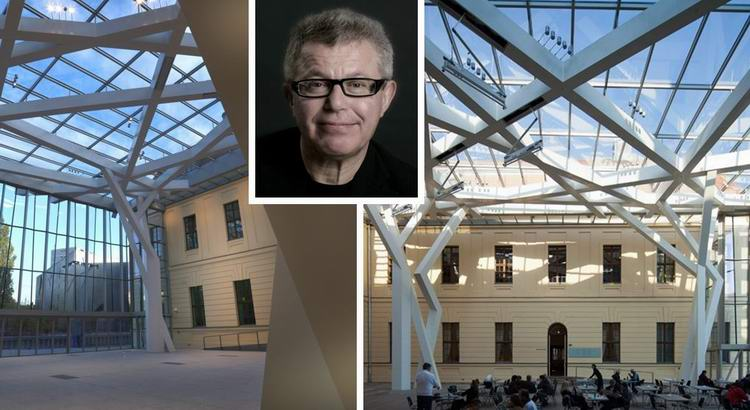
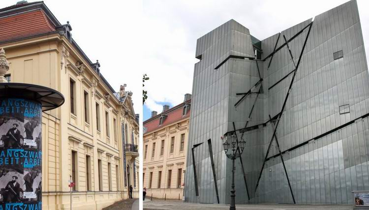
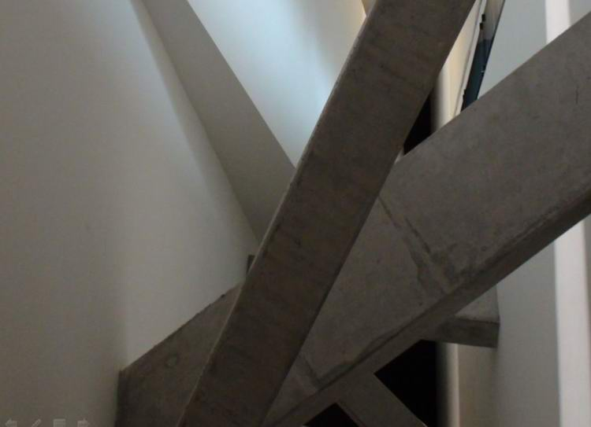
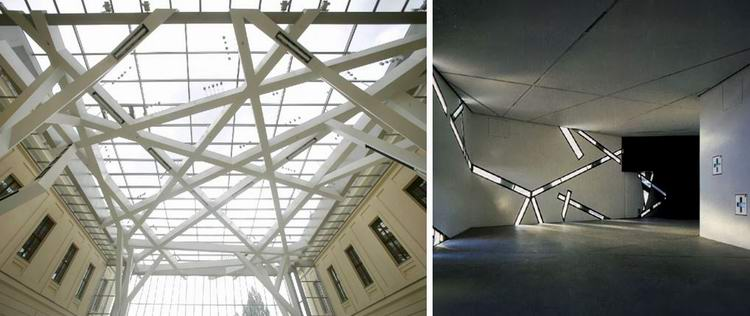
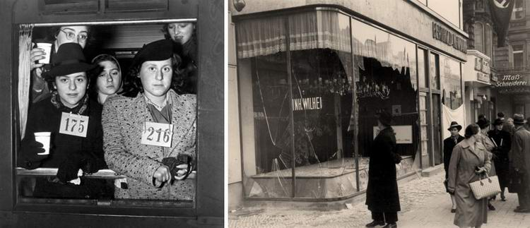
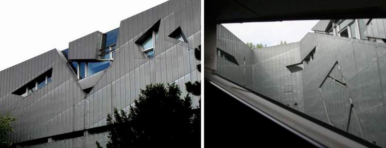
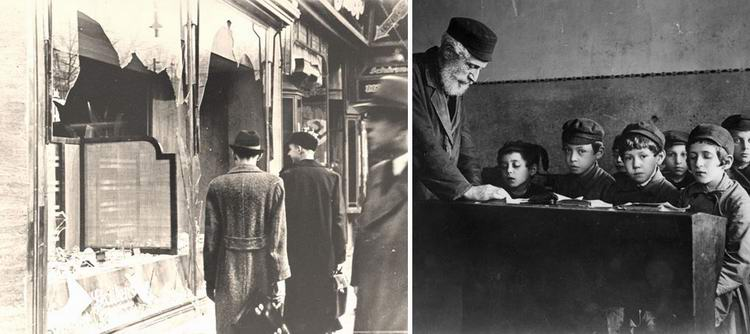
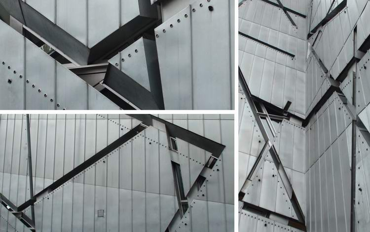
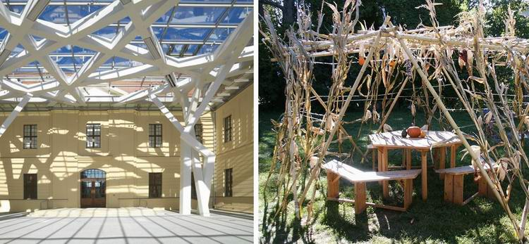
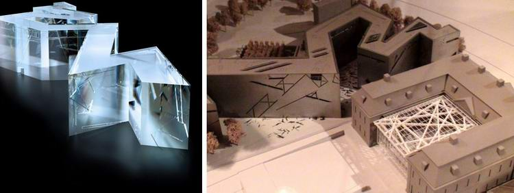

Арт-мидраш · Праздники в Библии · Артефакты · Путешествия
Куща ДАНИЭЛЯ ЛИБЕСКИНДА. Праздник СУККОТ
Архитектура Еврейского музея в Берлине представляет собой трансляцию эмоций, страхов и надежд евреев во время их долгой истории. Здание Либескинда, спроектированное в форме изломанной линии, принесло архитектору международную известность.

Музей состоит из двух зданий: старого U-образного в плане здания и зигзагообразного нового здания архитектора Даниэля Либескинда. Первое являет собой образец барокко, второе – деконструктивизма, стиля, проникнутого духом диструкции.

Проект архитектора дает посетителям возможность хотя бы отчасти ощутить те невзгоды, которые выпали на долю еврейского народа.
Попав внутрь здания, посетители сразу же теряют чувство равновесия, так как пол музея имеет уклон, и уже с первых шагов необходимо предпринимать некоторые усилия для того, чтобы двигаться вперед. Здесь же расположена «Башня Холокоста», небольшое замкнутое пустое пространство с высокими черными стенами и небольшим просветом на самом верху, «Сад Изгнания» и др.

Куща Даниэля Либескинда
Glashof - продолжение музея. Это внутренний дворик, увенчанный прозрачной крышей площадью 670 кв.м. Стеклянное покрытие поддерживается четырьмя колоннами как бы сплетенных прутьев, переходящих в свободное плетение кровли. Образной основой этой конструции послужила сукка (куща), устраиваемая каждой еврейской семьей во время праздника кущей (Суккот).
Glashof - это самое уязвимое, что можно представить себе, говоря о еврейской истории в Германии и всем, что связано с Холокостом. Самое хрупкое и ненадежное... огромная витрина, для которой достаточно одного «правильно» брошенного камня.

Glashof - это слово немецкого происхождения – буквально – стеклянный двор.
Первая асоциация, всплывающая в моей голове – другое немецкое слово - Kristallnacht (хрустальная ночь). Если вы введете слово «хрусталь», гугл автоматически дополнит фразу вариантом – «ночь».

Хрустальная ночь – грандиозный погром против евреев по всей нацистской Германии и части Австрии 9-10 ноября 1938 года, дело рук военизированных отрядов СА и гражданского населения.

Нападения привели к тому, что улицы были покрыты осколками стекла витрин, принадлежавших евреям магазинов, зданий и синагог.
Немецкий историк Ганс Моммзен считает основным мотивом для погрома - желание партийный вожаков земельных округов национал-социалистической немецкой рабочей партии захватить еврейское имущество и бизнес.

После Хрустальной ночи преследование евреев усилилось. Этп ночь знаменует собой начало Окончательного решения еврейского вопроса и Холокоста.
Разбитое стекло – проходит лейтмотивом в дизайне всего Еврейского музея Либескинда. Разрушенный мир, крушение надежд, катастрофа.

Потрясает замысел Либескинда посреди катастрофы, разрушения, обрушенных балок, раздавленных надежд поместить эту, казалось бы неуместную цитату из Торы – еврейскую сукку, заповеданную Всевышним Своему народу.
Узкие темные пространства, дороги и лестницы, ведущие в тупик... Мощные стены, массивные глыбы и железобетонные балки, которые по идее должны нести в себе уверенность и надежность – низвержены.

И на контрасте со всем этим – открытое, светлое пространство, очень не надежное, особенно имея в виду уже приведенные мной ассоциации с «хрустальной ночью» и многочисленными разбитыми еврейскими окнами, многочисленными разбитыми надеждами и судьбами. Контраст мощной толщи тьмы и залитого светом пространства, перекрытого стеклянной завесой, не способной защитить, но зато позволяющей видеть Небо.

Суть сукки – радость открытого неба над головой и упование на Всевышнего. Не толстые стены и не надежная конструкция, но Отец наш который на небесах (Авину ше ба-Шамаим) – наша гарантия. Зыбкое Божье – надежнее самого надежного человеческого.
Автор: Эфраим Калиш
видео о Еврейском музее в Берлине см. здесь: #1, #2, #3
Здесь можно посмотреть фото нашей сукки и как мы ее строили.